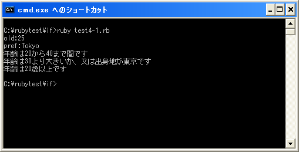

論理演算子
関係演算子を使えば簡単な条件判断は可能ですが、「a と bが等しい」且つ「c は dよりも大きい」など条件式を組み合わせた複雑な条件式を記述するには論理演算子を使います。
まずはRubyで用意されている論理演算子の種類を確認します。
| 演算子 | 記述例 | 意味 | 別の演算子 |
|---|---|---|---|
| && | a && b | aとbが共に真の場合に真 | and |
| || | a || b | aかbの少なくとも1つが真の場合に真 | or |
| ! | !a | aが真の時に偽、偽の時に真 | not |
「&&」演算子及び「||」演算子の場合は左辺及び右辺にそれぞれ別の条件式を記述します。そしてそれぞれの条件式が真または偽となった時に、全体の式として真となるのか偽となるのかを論理演算子によって決定します。
左辺条件式 演算子 右辺条件式
「!」演算子の場合は右辺に条件式を記述します。そして条件式が真または偽となった時に、全体の式として真となるのか偽となるのかを論理演算子によって決定します。
演算子 右辺条件式
論理積の場合は左辺及び右辺がどちらも真となる場合に全体として真を返します。論理和の場合は左辺又は右辺の少なくともどちらか1つが真の場合に全体として真を返します。否定は右辺が真なら偽を、偽なら真を返します。
なおRubyの論理演算子では、左から右へ順に条件式を評価していき、式全体の評価が確定した場合はその時点で残りの評価を行いません。例えば「&&」の場合、左辺が偽(false)なら右辺を評価するまでもありませんので評価を行いません。また「||」の場合、左辺が真(true)なら右辺を評価するまでもありませんので評価を行いません。
それでは一つ一つ確認していきます。
論理積
論理積(AND)は演算子「&&」の左辺及び右辺の条件式が共に真の場合のみ全体の式の評価が真となります。
左辺条件式 && 右辺条件式
左辺及び右辺の条件式の評価毎に式全体の評価がどうなるのかは次の通りです。
| 左辺 | 右辺 | 全体の式 |
|---|---|---|
| 真 | 真 | 真 |
| 真 | 偽 | 偽 |
| 偽 | 真 | 偽 |
| 偽 | 偽 | 偽 |
具体的には次のように使用します。
old = 25
if old < 40 && old > 20 then
print("年齢は20から40まで間です")
end
上記は左辺の「old < 40」、そして右辺の「old > 20」がどちらも真(true)ですので全体の式「old < 40 && old > 20」も真(true)となります。
もう一つ例を見てみます。
old = 25
pref = "Tokyo"
if old < 40 && pref == "Osaka" then
print("年齢は40より小さく、出身地は大阪です")
end
上記は左辺の「old < 40」は真(true)ですが、右辺の「pref == "Osaka"」が偽(false)ですので全体の式「old < 40 && pref == "Osaka"」は偽(false)となります。
また同じ演算を行う「and」も用意されています。これは「&&」と同じ演算を行いますが優先順位が低くなっています。
論理和
論理和(OR)は演算子「||」の左辺及び右辺の少なくともどちらか一つの条件式が真の場合に全体の式の評価が真となります。
左辺条件式 || 右辺条件式
左辺及び右辺の条件式の評価毎に式全体の評価がどうなるのかは次の通りです。
| 左辺 | 右辺 | 全体の式 |
|---|---|---|
| 真 | 真 | 真 |
| 真 | 偽 | 真 |
| 偽 | 真 | 真 |
| 偽 | 偽 | 偽 |
具体的には次のように使用します。
old = 25
pref = "Tokyo"
if old > 30 || pref == "Tokyo" then
print("年齢は30より大きいか、又は出身地が東京です")
end
上記は左辺の「old > 30」は偽(false)ですが、右辺の「pref == "Tokyo"」が真(true)ですので全体の式「old > 30 || pref == "Tokyo"」は真(true)となります。
もう一つ例を見てみます。
pref = "Tokyo"
if pref == "Chiba" || pref == "Osaka" then
print("出身地は千葉か大阪です")
end
上記は左辺の「pref == "Chiba"」、そして右辺の「pref == "Osaka"」がどちらも偽(false)ですので全体の式「pref == "Chiba" || pref == "Osaka"」も偽(false)となります。
また同じ演算を行う「or」も用意されています。これは「||」と同じ演算を行いますが優先順位が低くなっています。
否定
否定(NOT)は演算子「!」の右辺の条件式が真の場合に全体の式の評価が偽となり、右辺の条件式が偽の場合に全体の式の評価が真となります。
! 右辺条件式
右辺の条件式の評価毎に式全体の評価がどうなるのかは次の通りです。
| 右辺 | 全体の式 |
|---|---|
| 真 | 偽 |
| 偽 | 真 |
具体的には次のように使用します。
old = 25
if !(old < 20) then
print("年齢は20歳以上です")
end
上記は左辺の「old < 20」は偽(false)ですので全体の式「!(old < 20)」は真(true)となります。
否定を使う場合には優先順位に気を付ける必要があります。否定を表す演算子「!」は優先順位が高いので括弧を使用しないと意図しない結果となる場合があります。詳しくは次のページで確認します。
また同じ演算を行う「not」も用意されています。これは「!」と同じ演算を行いますが優先順位が低くなっています。
サンプルプログラム
では簡単なプログラムで確認して見ます。
#! ruby -Ku
require "kconv"
old = 25
pref = "Tokyo"
print("old:", old, "¥n")
print("pref:" + pref + "¥n")
if old < 40 && old > 20 then
print(Kconv.tosjis("年齢は20から40まで間です¥n"))
end
if old > 30 || pref == "Tokyo" then
print(Kconv.tosjis("年齢は30より大きいか、又は出身地が東京です¥n"))
end
if !(old < 20) then
print(Kconv.tosjis("年齢は20歳以上です¥n"))
end
上記のプログラムを「test4-1.rb」として保存します。文字コードはUTF-8です。そして下記のように実行して下さい。

( Written by Tatsuo Ikura )

著者 / TATSUO IKURA
初心者～中級者の方を対象としたプログラミング方法や開発環境の構築の解説を行うサイトの運営を行っています。